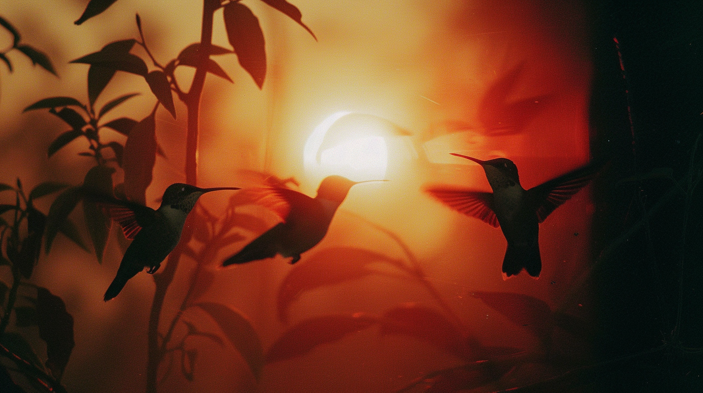
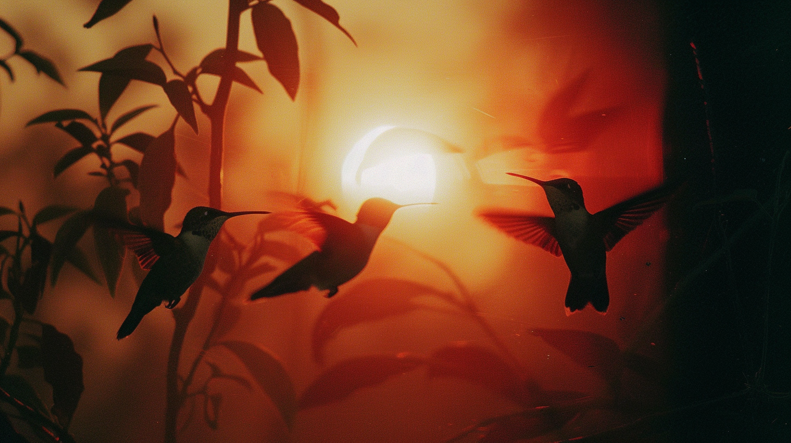

The conceptof automated art dates back at least to the automata of ancient Greek civilization, where inventors such as Daedalus and Hero of Alexandria were described as having designed machines capable of writing text, generating sounds, and playing music.[2][3] The tradition of creative automatons has flourished throughout history, such as Maillardet's automaton, created in the early 1800s.[4]The academic discipline of artificial intelligence was founded at a research workshop at Dartmouth College in 1956, and has experienced several waves of advancement and optimism in the decades since.[5] Since its founding, researchers in the field have raised philosophical and ethical arguments about the nature of the human mind and the consequences of creating artificial beings with human-like intelligence; these issues have previously been explored by myth, fiction and philosophy since antiquity.[6] Since the founding of AI in the 1950s, artists and researchers have used artificial intelligence to create artistic works. These works were sometimes referred to as algorithmic art,[7] computer art, digital art or new media.[8] One of the first significant AI art systems is AARON, developed by Harold Cohen beginning in the late 1960s at the University of California at San Diego.[9] AARON is the most notable example of AI art in the era of GOFAI programming because of its use of a symbolic rule-based approach to generate technical images.[10] Cohen developed AARON with the goal of being able to code the act of drawing. In its primitive form, AARON created simple black and white drawings. Cohen would later finish the drawings by painting them. Throughout the years, he also began to develop a way for AARON to also paint. Cohen designed AARON to paint using special brushes and dyes that were chosen by the program itself without mediation from Cohen.[11] AARON was exhibited in 1972 at the Los Angeles County Museum of Art.[12] In both 1991 and 1992, Karl Sims won the Golden Nica award at Prix Ars Electronica for his 3D AI animated videos using artificial evolution.[13][14][15] In 2001 Scott Draves won the Fundacion Telefonica Life 4.0 prize[16] for Electric Sheep, which used AI to create an infinite animation by learning from its audience. In 2009, Eric Millikin won the Pulitzer Prize along with several other awards for his artificial intelligence art that was critical of government corruption in Detroit and resulted in the city's mayor being sent to jail.[17][18][19] The concept of automated art dates back at least to the automata of ancient Greek civilization, where inventors such as Daedalus and Hero of Alexandria were described as having designed machines capable of writing text, generating sounds, and playing music.[2][3] The tradition of creative automatons has flourished throughout history, such as Maillardet's automaton, created in the early 1800s.[4] The academic discipline of artificial intelligence was founded at a research workshop at Dartmouth College in 1956, and has experienced several waves of advancement and optimism in the decades since.[5] Since its founding, researchers in the field have raised philosophical and ethical arguments about the nature of the human mind and the consequences of creating artificial beings with human-like intelligence; these issues have previously been explored by myth, fiction and philosophy since antiquity.[6] Since the founding of AI in the 1950s, artists and researchers have used artificial intelligence to create artistic works. These works were sometimes referred to as algorithmic art,[7] computer art, digital art or new media.[8] One of the first significant AI art systems is AARON, developed by Harold Cohen beginning in the late 1960s at the University of California at San Diego.[9] AARON is the most notable example of AI art in the era of GOFAI programming because of its use of a symbolic rule-based approach to generate technical images.[10] Cohen developed AARON with the goal of being able to code the act of drawing. In its primitive form, AARON created simple black and white drawings. Cohen would later finish the drawings by painting them. Throughout the years, he also began to develop a way for AARON to also paint. Cohen designed AARON to paint using special brushes and dyes that were chosen by the program itself without mediation from Cohen.[11] AARON was exhibited in 1972 at the Los Angeles County Museum of Art.[12] In both 1991 and 1992, Karl Sims won the Golden Nica award at Prix Ars Electronica for his 3D AI animated videos using artificial evolution.[13][14][15] In 2001 Scott Draves won the Fundacion Telefonica Life 4.0 prize[16] for Electric Sheep, which used AI to create an infinite animation by learning from its audience. In 2009, Eric Millikin won the Pulitzer Prize along with several other awards for his artificial intelligence art that was critical of government corruption in Detroit and resulted in the city's mayor being sent to jail.[17][18][19] The concept of automated art dates back at least to the automata of ancient Greek civilization, where inventors such as Daedalus and Hero of Alexandria were described as having designed machines capable of writing text, generating sounds, and playing music.[2][3] The tradition of creative automatons has flourished throughout history, such as Maillardet's automaton, created in the early 1800s.[4] The academic discipline of artificial intelligence was founded at a research workshop at Dartmouth College in 1956, and has experienced several waves of advancement and optimism in the decades since.[5] Since its founding, researchers in the field have raised philosophical and ethical arguments about the nature of the human mind and the consequences of creating artificial beings with human-like intelligence; these issues have previously been explored by myth, fiction and philosophy since antiquity.[6] Since the founding of AI in the 1950s, artists and researchers have used artificial intelligence to create artistic works. These works were sometimes referred to as algorithmic art,[7] computer art, digital art or new media.[8] One of the first significant AI art systems is AARON, developed by Harold Cohen beginning in the late 1960s at the University of California at San Diego.[9] AARON is the most notable example of AI art in the era of GOFAI programming because of its use of a symbolic rule-based approach to generate technical images.[10] Cohen developed AARON with the goal of being able to code the act of drawing. In its primitive form, AARON created simple black and white drawings. Cohen would later finish the drawings by painting them. Throughout the years, he also began to develop a way for AARON to also paint. Cohen designed AARON to paint using special brushes and dyes that were chosen by the program itself without mediation from Cohen.[11] AARON was exhibited in 1972 at the Los Angeles County Museum of Art.[12] In both 1991 and 1992, Karl Sims won the Golden Nica award at Prix Ars Electronica for his 3D AI animated videos using artificial evolution.[13][14][15] In 2001 Scott Draves won the Fundacion Telefonica Life 4.0 prize[16] for Electric Sheep, which used AI to create an infinite animation by learning from its audience. In 2009, Eric Millikin won the Pulitzer Prize along with several other awards for his artificial intelligence art that was critical of government corruption in Detroit and resulted in the city's mayor being sent to jail.[17][18][19] The concept of automated art dates back at least to the automata of ancient Greek civilization, where inventors such as Daedalus and Hero of Alexandria were described as having designed machines capable of writing text, generating sounds, and playing music.[2][3] The tradition of creative automatons has flourished throughout history, such as Maillardet's automaton, created in the early 1800s.[4] The academic discipline of artificial intelligence was founded at a research workshop at Dartmouth College in 1956, and has experienced several waves of advancement and optimism in the decades since.[5] Since its founding, researchers in the field have raised philosophical and ethical arguments about the nature of the human mind and the consequences of creating artificial beings with human-like intelligence; these issues have previously been explored by myth, fiction and philosophy since antiquity.[6] Since the founding of AI in the 1950s, artists and researchers have used artificial intelligence to create artistic works. These works were sometimes referred to as algorithmic art,[7] computer art, digital art or new media.[8] One of the first significant AI art systems is AARON, developed by Harold Cohen beginning in the late 1960s at the University of California at San Diego.[9] AARON is the most notable example of AI art in the era of GOFAI programming because of its use of a symbolic rule-based approach to generate technical images.[10] Cohen developed AARON with the goal of being able to code the act of drawing. In its primitive form, AARON created simple black and white drawings. Cohen would later finish the drawings by painting them. Throughout the years, he also began to develop a way for AARON to also paint. Cohen designed AARON to paint using special brushes and dyes that were chosen by the program itself without mediation from Cohen.[11] AARON was exhibited in 1972 at the Los Angeles County Museum of Art.[12] In both 1991 and 1992, Karl Sims won the Golden Nica award at Prix Ars Electronica for his 3D AI animated videos using artificial evolution.[13][14][15] In 2001 Scott Draves won the Fundacion Telefonica Life 4.0 prize[16] for Electric Sheep, which used AI to create an infinite animation by learning from its audience. In 2009, Eric Millikin won the Pulitzer Prize along with several other awards for his artificial intelligence art that was critical of government corruption in Detroit and resulted in the city's mayor being sent to jail.[17][18][19]